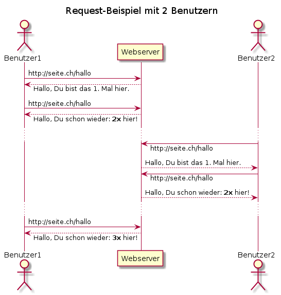
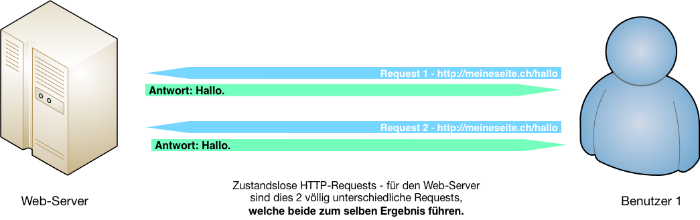
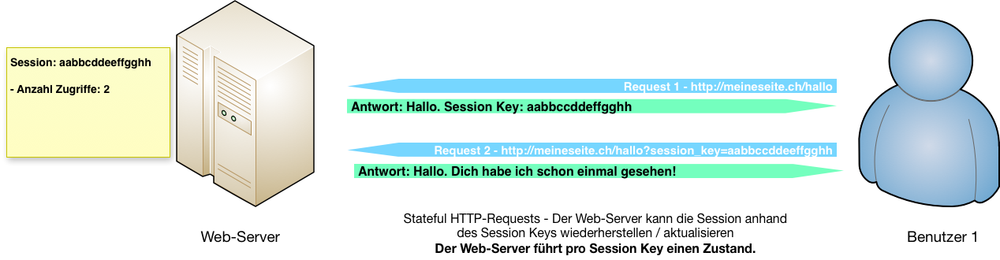
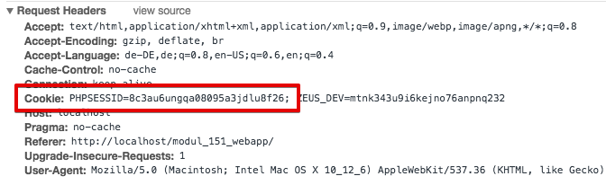
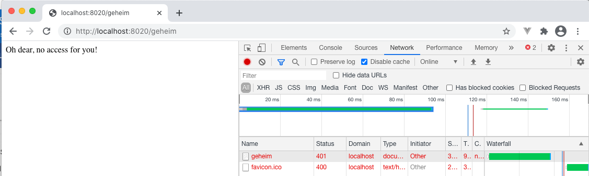

{% extends "../_base_template.html" %}
{% block title %}Lektion 7 - State, Sessions{% endblock %}

{% block sections %}
<section data-markdown>
<textarea data-template>
<i class="fas fa-graduation-cap"></i> M151 - DB in Web-App einbinden
=============================

Heutiges Ziel
--------------

* Input zu den Kurzreferaten zu Web-Bedrohungen
* Sie wissen, was „Stateless“ und „Stateful“ für eine Web-Applikation bedeutet
* Sie wissen, wofür Stateful Sessions benötigt werden
* Sie können eine stateful Session in PHP aufbauen und benützen
* Sie wissen, wie Sie eine Route / Endpoint anhand der Session schützen können
</textarea>
</section>

<section data-markdown>
<textarea data-template>
<i class="fas fa-graduation-cap"></i> Thema Model / Query Builder / Repository
=============================

Sind noch Fragen zum Thema Model / Query Builder / Repository / DB-Abfragen?

**Ziel:** Das Model-Konstrukt soll die SQL-Abfragen so weit wie möglich abstrahieren / verallgemeinern, sodass sich
der Programmierer in grossen Teilen der Applikation nicht mehr mit Datenbanken / SQL herumschlagen muss.

</textarea>
</section>

<section data-markdown>
<textarea data-template>
<i class="fas fa-graduation-cap"></i> Kurzreferate zu "Web-Bedrohungen"
=============================

**Angriff!** Nachrichten zu Attacken auf Webseiten gehören mittlerweile zum
Alltag. Als Web-Entwickler müssen Sie die Gefahren des Webs kennen.


Sie erarbeiten einen Kurzvortrag zu einem Thema der Web-Security.

Siehe Aufgabenblatt auf Moodle: "Aufgabe Referat 'Web-Bedrohungen'

**Themen:**

* SQL - Injection
* Cross Site Scripting (XSS)
* Session Hijacking
* Directory Traversal Attack
* Cross Site Request Forgery (CSRF)
* Brute Force Attacks
* (Distributed) Denial Of Service, (D)DOS

**Ziel:**

* Sie kennen die Gefahr einer Web-Bedrohung und können Gegenmassnahmen ergreifen.
* Sie können die Bedrohung sowie die Gegenmassnahme erklären.

Wir losen die Themen aus.

**Vorträge:** am **04.11.2020** (4x) und am **11.11.2020** (3x)

<i class="far fa-hand-point-right"></i> Das Referat zählt zu **20% zur Modulnote**.

</textarea>
</section>


<section data-markdown>
<textarea data-template>
<i class="fas fa-graduation-cap"></i> State, Sessions
=============================

Stellen sie sich folgendes Szenario eines Seitenaufrufs im Internet von zwei unterschiedlichen Benutzern vor:

<style>
    .small-p {
        margin-bottom: 1.5em !important;
    }
</style>
<div style="display: flex">

<div style="margin-left: 10px">

### Fragen:

* Sie sehen hier mehrere Requests von unterschiedlichen Clients.<br />
  **Aufgrund welcher (HTTP-)Informationen "weiss" der Server, welchen Client er nun gerade bedient?**
* Was setzt eine solche Identifizierung des Clients (Browser, User) auf der Server-Seite voraus?
* Was setzt eine solche Identifizierung des Clients (Browser, User) auf der Client-Seite voraus?
* Sieht das HTTP-Protokoll überhaupt eine Client-Identifizierung vor? Wenn ja, wie?

</div>
</div>

<i class="far fa-hand-point-right"></i> Diskutieren Sie diese Fragen kurz in der Klasse (zu Zweit, zu Dritt), wir besprechen
Ihre Antworten gleich im Anschluss.

</textarea>
</section>

<section data-markdown>
<textarea data-template>
<i class="fas fa-graduation-cap"></i> Stateless vs. Stateful
=============================

Ein **„State“** ist ein **Zustand zu einer bestimmten Zeit** – Bestimmte Werte, welche zu einer bestimmten Zeit gelten. Werden diese Werte geändert, spricht man von einem neuen Zustand, von einem neuen „State“.

Das oben gezeigte Szenario bedingt, dass auf dem Server pro User / pro Client ein „State“, ein Zustand festgehalten wird – Der Server muss also wissen, ob der User/der Client bereits hier war.

Dies wiederum bedeutet, dass der Request einem bestimmten Benutzer, einem bestimmten State zugeordnet werden muss.

**Das HTTP-Protokoll grundsätzlich ist stateless – zustandslos**: Das Protokoll sieht **KEINEN** Mechanismus vor, um einen Request einem bestehenden State zuzuordnen! Jeder HTTP-Request ist für den Web-Server wieder ein neuer Request.



<i class="far fa-hand-point-right"></i> **Ein HTTP-Request ist also grundsätzlich zustandslos – stateless!**

</textarea>
</section>


<section data-markdown>
<textarea data-template>
<i class="fas fa-graduation-cap"></i> Stateless vs. Stateful
=============================

**Stateful** wiederum bedeutet, dass sich der Web-Server den „Zustand“ der Kommunikation mit einem
bestimmten Benutzer merkt: Er „weiss“, dass derjenige schon einmal da war, dass er sich eingeloggt hat,
dass er die Seite schon 5 mal aufgerufen hat.

Nur: Wie lässt sich dies bewerkstelligen, wenn das HTTP-Protokoll dies nicht vorsieht?


<i class="far fa-hand-point-right"></i> **Frage**: Haben Sie eine Idee, wie Sie bewerkstelligen könnten,
dass HTTP-Requests „identifiziert“ und somit auf dem Server einem State zugeordnet werden können?
Skizzieren Sie einen möglichen Lösungsansatz!

</textarea>
</section>

<section data-markdown>
<textarea data-template>
<i class="fas fa-graduation-cap"></i> Stateless vs. Stateful
=============================

**Lösung: Stateful Sessions mittels Session-Key**

Der einzige Weg, einen Benutzer wieder zu erkennen, führt über eine Art „Ticket“, eines so genannten „Session Key“:

* Beim ersten Zugriff (oder beim Aufbau einer Session) liefert der Server einen für den Benutzer eindeutigen „Session Key“,
  einen Schlüssel also, oder ein „Ticket“.
* Der Server merkt sich die ausgestellten Tickets für eine gewisse Zeit, sowie zu diesem Ticket gehörende Daten (z.B. Anzahl Besuche)
* Bei jedem weiteren Request, welche der User tätigt, muss dieser (resp. sein Browser) diesen Session Key wieder mitliefern:
 Anhand dieses Session Keys „weiss“ der Server, um welche Session es sich handelt,
 und kann den aktuellen State wiederherstellen.



**Was können wir damit tun?**

* Wir können festhalten, ob sich ein Benutzer eingeloggt hat – hat er sich erfolgreich mit Passwort angemeldet, verzeichnen wir dies in der Session – beim nächsten Aufruf „weiss“ der Server, wer dies ist.
* Wir können beliebige Werte für diese Session festhalten, z.B. wie lange die Session schon besteht, Zustände der Web-Applikation wie z.B. Inhalt eines Warenkorbes, Zustand eines Menus (auf- / zugeklappt) etc.
</textarea>
</section>

<section data-markdown>
<textarea data-template>
<i class="fas fa-graduation-cap"></i> Stateless vs. Stateful
=============================

**Wie wird der Session Key übermittelt?**

Es gibt verschiedene Wege, wie nun der Session Key übermittelt werden kann. Eine Möglichkeit,
welche sich etabliert hat und fester Bestandteil von Browsern und Sprachen wie PHP ist,
ist via **„Session Cookie“**:

Ein **Cookie** ist ein Textschnippsel, welcher die besuchte Webseite / der Web-Server im Browser des Users „platziert“. Das Cookie wird vom Web-Server erzeugt und als Antwort auf einen Request im HTTP-Header mitgeschickt.
Der Web-Browser sendet nun den Inhalt dieses Text-Schnippsels **bei allen weiteren Requests** zu dieser Web-Seite automatisch wieder mit, ebenfalls als Teil des HTTP-Headers.



Der Web-Server sendet in diesem Fall den **Session Key in einem Cookie** an den Browser. Bei jedem Request sendet der Browser dieses Cookie wieder mit, und der Server kann so die Session identifizieren und den State der Session laden / wiederherstellen.

</textarea>
</section>

<section data-markdown>
<textarea data-template>
<i class="fas fa-graduation-cap"></i> Stateless vs. Stateful
=============================

**Sessions und State in PHP**

Die Session- und somit State-behandlung mittels Session-Cookies ist fester Teil von PHP und sehr einfach zu bedienen.
PHP kann somit sehr einfach „stateful Requests“ anbieten.

**Cookie-basierte Session starten / wiederherstellen**

Eine Session wird in PHP mittels `session_start()` gestartet resp. wiederhergestellt:

```php
// Starten / wiederherstellen der Session:
// Mit dieser Anweisung wird eine neue Session gestartet (Session Cookie an Browser ausgegeben),
// ODER eine bestehende Session wiederhergestellt (Session-Cookie vom Request ausgelesen).
session_start();

// Session-ID ausgeben:
echo session_id();
```

<i class="far fa-hand-point-right"></i> Die Session-ID wird nun jeweils via Cookie im HTTP-Header beidseitig (Server, Browser) übertragen.

**Achtung**: `session_start()` muss aufgerufen werden, **bevor** eine andere Ausgabe an den Browser startet (z.B. mit echo()):
Eine Ausgabe mit z.B. echo() schliesst den HTTP-Header ab. Da das Session cookie als Teil des HTTP-Headers mitgeschickt wird, würde dieses nicht mehr korrekt ausgeliefert.
</textarea>
</section>

<section data-markdown>
<textarea data-template>
<i class="fas fa-graduation-cap"></i> Stateless vs. Stateful
=============================

**Session-Daten lesen und schreiben in PHP**

Ist die Session gestartet / geladen, können Daten in die Session / den State geschrieben / gelesen werden:

```php
// Auslesen der Session-Variable 'counter':
if (!isset($_SESSION['counter'])) {
    echo "<p>Hallo, Fremder, Du bist das erste mal hier!</p>";
    // Setzen der Session-Variable 'counter':
    $_SESSION['counter'] = 1;
} else {
    echo "<p>Hallo, Dich habe ich schon {$_SESSION['counter']} mal gesehen!</p>";
    $_SESSION['counter']++;
}
```

<i class="far fa-hand-point-right"></i> So können Daten „über mehrere Requests“ hinweg in einer cookie-basierten Session festgehalten werden.

### Weitere Möglichkeiten

Es gibt noch weitere Technologien, wie ein Session-Key ausgetauscht werden kann, auf welche wir hier aber nicht genauer eingehen:

* HTTP-Header: Session-Identifikation in einem eigenen HTTP-Session-Header senden (Nachteil: Sie müssen dies auf Client und Server-seite selber machen).
  Dieses Vorgehen finden Sie viel bei APIs.
* JSON Web Token (siehe https://jwt.io/): Session-Info als verschlüsseltes JSON-Token hin- und her schicken. Auch hier müssen Sie die Umsetzung
  selber vornehmen, weder Browser noch Backend machen dies automatisch.

</textarea>
</section>

<section>
<section data-markdown>
<textarea data-template>
<i class="fas fa-graduation-cap"></i> Endpunkt schützen
=============================

Sie haben nun also die Möglichkeit, einen User "wiederzuerkennen", resp. eine Session als "authentifiziert" zu kennzeichnen.

Nur: Wie nutzen Sie dies nun, um Endpunkte (=Routen) zu schützen?

Szenario: Zugriff auf "/geheim" einschränken
-----------------------------------------------

Wir wollen nun den Zugriff auf die Route `/geheim` nur gewähren, wenn der Benutzer eingeloggt ist. Wie setzen wir dies um?

### 1. Session authentifizieren beim Login

Damit Sie wissen, ob eine Session "authentifiziert" ist, müssen Sie diese kennzeichnen: Das passiert am Besten in Ihrer Login-Action,
also dort, wo Sie den Benutzer via Username / Passwort authentifizieren:

```php
public function login() {
    // Username / PW aus POST-Daten auslesen
    $username = $_POST['username'];
    $password = $_POST['password'];

    // Wir starten / öffnen eine Session auf dem Server:
    session_start();

    // Wir pruefen den Login: War dieser erfolgreich,
    // halten wir z.B. den Username und die Login-Zeit fest:
    if ($this->loginOk($username, $password)) {
        $_SESSION['username'] = $username;
        $_SESSION['login_time'] = date('Y-m-d H:i:s');

        // Als Antwort liefern wir z.B. die Session-ID:
        echo json_encode(['session_id' => session_id()]);
    } else {
        // falls Login NICHT ok, löschen wir die Werte aus der Session:
        unset($_SESSION['username']);
        unset($_SESSION['login_time']);
        echo "Fehler, Login nicht erfolgreich";
    }
}
```

<i class="far fa-hand-point-right"></i> Wir halten also einfach in der Session fest, ob der User eingeloggt ist oder nicht.

(weiter auf der nächsten Folie)
</textarea>
</section>

<section data-markdown>
<textarea data-template>
<i class="fas fa-graduation-cap"></i> Endpunkt schützen
=============================

### 2. Route / Endpunkt schützen

Nun wollen wir die Route `/geheim` schützen:

* Ist der User authentifiziert / berechtigt, wird die Route prozessiert
* wenn **nicht**, antworten wir mit `HTTP 401 - Unauthorized`<br/>siehe https://developer.mozilla.org/de/docs/Web/HTTP/Status/401

```php
/**
 * Nur zugänglich für eingeloggte User
 */
public function geheim() {

    // Wir starten die Session auf dem Server:
    session_start();

    // Ist der User eingeloggt? Dann weiter:
    if (!empty($_SESSION['username'])) {
        echo "Hello, dear {$_SESSION['username']}";
    } else {
        // .... sonst gibts eins auf die Finger:
        // Wir senden einen 401:
        http_response_code(401);
        echo "Oh dear, no access for you!";
    }
}
```

<i class="far fa-hand-point-right"></i> Wir sehen den Response Code nun auch in der Browser-Konsole:


</textarea>
</section>

<section data-markdown>
<textarea data-template>
<i class="fas fa-graduation-cap"></i> Endpunkt schützen
=============================

### 3. Variante: Session-lose Authentifizierung via API-Key

Wenn Sie eine API programmieren, ist vielmals keine stateful Session notwendig, jeder Request soll "für sich" authentifiziert werden.
Dabei muss der Client bei jedem API-Zugriff seinen Zugriffsschlüssel mitsenden.

Dabei haben Sie verschiedene Möglichkeiten.

#### Möglichkeit 1: Client sendet API-Key im `Authorization`-Header

```php
/**
 * Nur zugänglich für eingeloggte User, via API-Key
 */
public function geheim() {
    // Wir starten hier KEINE Session, sondern lesen einen API-Key vom Authorization-Header:
    // Der Client sendet den Header "Authorization: Bearer [api-key]":

    // Request headers auslesen:
    $headers = apache_request_headers();

    // Haben wir unseren Header? --> auslesen:
    $apiKey = null;
    if (!empty($headers['Authorization'])) {
        $apiKey = str_replace('Bearer ', '', $headers['Authorization']);
    }

    // Ist der Key gültig? (prüfen gegen z.B. DB) ==> dann weiter:
    if ($this->isValidKey($apiKey)) {
        echo "Hello, dear user";
    } else {
        // .... sonst gibts eins auf die Finger:
        // Wir senden einen 401:
        http_response_code(401);
        echo "Oh dear, no access for you!";
    }
}
```

<i class="far fa-hand-point-right"></i> Der Mechanismus ist der Selbe wie mit session, nur prüfen wir die Valididät des Zugriffs anders.

</textarea>
</section>
<section data-markdown>
<textarea data-template>
<i class="fas fa-graduation-cap"></i> Endpunkt schützen
=============================

### 3. Variante: Session-lose Authentifizierung via API-Key

#### Möglichkeit 2: Via Basic Auth-Header

`Basic Auth` ist ein simpler Mechanismus, um Benutzerdaten zu übermitteln: Die Login-Daten werden dabei unverschlüsselt
im `Authorization`-HTTP-Header mitgeschickt. Wenn Ihre Route via Basic-Auth authentifiziert werden soll, können Sie dies auch
entsprechend anfordern:

```php
/**
 * Nur zugänglich für eingeloggte User, via BasicAuth:
 */
public function geheim() {
    // Wir starten hier KEINE Session, sondern lesen die Basic-Auth-Daten vom Authorization-Header:
    // Der Client sendet den Header "Authorization: Basic [base64(username:password)]":

    // Basic-Auth-Daten werden von PHP bereits aufbereitet:
    $username = $_SERVER['PHP_AUTH_USER'] ?? null;
    $password = $_SERVER['PHP_AUTH_PW'] ?? null;

    // Ist der User gültig? Validieren anhand Username/PW, wie gehabt:
    if ($this->userIsValid($username, $password)) {
        echo "Hello, dear user";
    } else {
        // ansonsten antworten wir mit einem Basic-Auth-Required Response

        // Informiert den Browser, dass er ein Login-Fenster anzeigen soll:
        header('WWW-Authenticate: Basic realm="My Realm"');

        // Wir senden einen 401:
        http_response_code(401);
        echo "Oh dear, no access for you!";
    }
}
```

<i class="far fa-hand-point-right"></i> Der Mechanismus ist der Selbe wie mit session, nur prüfen wir die Valididät des Zugriffs anders.

</textarea>
</section>
</section>

<section>
<section data-markdown>
<textarea data-template>
<i class="fas fa-graduation-cap"></i> komplettes Beispiel: Login
=============================

Das folgende Beispiel zeigt einen Login-Vorgang: Bei erfolgreichem Login wird der Benutzer
in der Session festgehalten, und beim erneuten Aufruf geprüft.

Der folgende LoginController ist auf 3 Folien aufgeteilt und zeigt die Routen `/login` (Login-Form), `/loginTry` (Login wird überprüft),
`/welcome` (Willkommen nach erfolgreichem Login) sowie `/logout` (Ausloggen). Die HTML-Ausgabe wird direkt als Inlinle-HTML-
Gemacht (nicht zu empfehlen, nur der Einfachheit halber so gewählt).


```php
namespace M151\Controller;

use M151\Http\Request;
use M151\View\View;
use M151\Application;

// Beispiel-Controller: Siehe diese und nachfolgende Folien
class LoginController extends Controller {
   public function __construct() {
       // Die Session wird z.B. im Constructor gestartet:
       session_start();
   }
    /**
     * Ein HTML-Formular ausliefern (Route: /login)
     */
    public function loginForm(Request $req) {
        $error = '';
        if (!empty($_SESSION['login_error'])) {
            $error = "<div style='background-color: red'>{$_SESSION['login_error']}</div>";
        }
        $loginSubmitUrl = $this->routeUrl('/login_try');
        echo <&#8203;<&#8203;<&#8203;EOT
    <h1>Login</h1>
    {$error}
    <form action="{$loginSubmitUrl}" method="POST">
        <label>Username: <input type="text" name="login"></label>
        <label>Passwort: <input type="password" name="passwort"></label>
        <button type="submit">login</button>
    </form>
EOT;
    }
}
```
</textarea>
</section>

<section data-markdown>
<textarea data-template>
<i class="fas fa-graduation-cap"></i> komplettes Beispiel: Login
=============================
```php
// Beispiel-Controller: ... Fortsetzung ...
class LoginController extends Controller {
    /**
     * Login überprüfen, Formulardaten von /login form (/login_try-Route)
     * Hier wird Username/Passwort geprüft, und im Erfolg der Login-Zustand
     * in der Session festgehalten:
     */
    public function loginTry(Request $req) {
        // Session-Zustand zurücksetzen
        $_SESSION['userinfo'] = null;
        $_SESSION['login_error'] = null;
        // Auslesen der Formulardaten: (via $_REQUEST-Variable:)
        $username = $_REQUEST('login');
        $pw = $_REQUEST('passwort');

        // Überprüfen der Login-Daten, z.B. durch Datenbank-Abfrage (hier nur beispielhaft):
        $loginOK = $username === 'alex' && $pw === 'geheim';

        if ($loginOK) {
            // OK: Login-Zustand in Session festhalten:
            $_SESSION['userinfo'] = array(
                'id' => 1,
                'vorname' => "Alexander",
                'name' => 'Schenkel',
                'email' => 'alex@alexi.ch',
                'letzter_login' => date(DATE_W3C)
            );
            // Anzeige Willkommens-Seite:
            $this->redirectTo('/welcome');
        } else {
            // oder wieder zum Login, wenn fehlgeschlagen:
            $_SESSION['login_error'] = 'Falscher Username / Passwort!';
            $this->redirectTo('/login');
        }
    }
}
```
</textarea>
</section>

<section data-markdown>
<textarea data-template>
<i class="fas fa-graduation-cap"></i> komplettes Beispiel: Login
=============================
```php
// Beispiel-Controller: ... Fortsetzung ...
class LoginController extends Controller {
    /**
     * Route /welcome: Die Willkommens-Seite prüft den Login-Zustand in der Session:
     * Ist diese vorhanden, hat sich der User in einem vorherigen Request erfolgreich eingeloggt.
     * Wenn nicht, wird wieder die Login-Seite angezeigt:
     */
    public function welcome(Request $req) {
        if (empty($_SESSION['userinfo'])){
            // Nicht eingeloggt, User-Info nicht vorhanden:
            $_SESSION['login_error'] = 'Nicht eingeloggt.';
            $this->redirectTo('/login');
            return;
        } else {
            // Eingeloggt, User-Info in Session vorhanden:
            $userinfo = $_SESSION['userinfo'];
            echo "Hallo, {$userinfo['vorname']}! Dein letzter Login war am: {$userinfo['letzter_login']}";
            echo "* ID: {$userinfo['id']}";
            echo "* Name: {$userinfo['name']}";
            echo "* Vorname: {$userinfo['vorname']}";
            echo "* Email: <a href='mailto:{$userinfo['email']}'>{$userinfo['email']}</a>";
            echo "<a href='{$this->routeUrl('/logout')}'>Ausloggen</a>";
        }
    }

    /**
     * Route /logout: Ausloggen: Wir löschen ganz einfach die Login-Info in der Session:
     */
    public function logout() {
        $_SESSION['userinfo'] = null;
        $_SESSION['login_error'] = null;
        $this->redirectTo('/login');
    }
}
```
</textarea>
</section>
</section>
{% endblock %}
